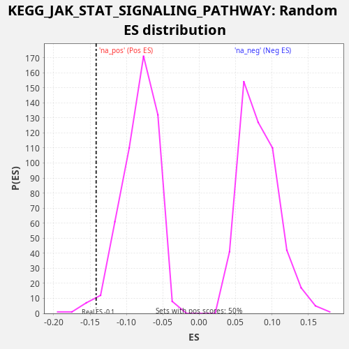

Profile of the Running ES Score & Positions of GeneSet Members on the Rank Ordered List
The same image in compressed SVG format
| Dataset | CCLE |
| Phenotype | NoPhenotypeAvailable |
| Upregulated in class | na_neg |
| GeneSet | KEGG_JAK_STAT_SIGNALING_PATHWAY |
| Enrichment Score (ES) | -0.14164138 |
| Normalized Enrichment Score (NES) | -1.7133641 |
| Nominal p-value | 0.02385686 |
| FDR q-value | 0.1564762 |
| FWER p-Value | 0.869 |
| SYMBOL | RANK IN GENE LIST | RANK METRIC SCORE | RUNNING ES | CORE ENRICHMENT | |
|---|---|---|---|---|---|
| 1 | IL21R | 279 | 0.541 | -0.0038 | No |
| 2 | CSF2RA | 405 | 0.215 | -0.0004 | No |
| 3 | IL9R | 560 | 0.074 | 0.0018 | No |
| 4 | STAT4 | 804 | 0.024 | -0.0004 | No |
| 5 | STAT1 | 1254 | 0.005 | -0.0123 | No |
| 6 | STAM | 1332 | 0.004 | -0.0065 | No |
| 7 | AKT2 | 1808 | 0.001 | -0.0197 | No |
| 8 | SPRY3 | 2184 | 0.001 | -0.0281 | No |
| 9 | IFNAR2 | 2381 | 0.000 | -0.0280 | No |
| 10 | CCND3 | 2833 | 0.000 | -0.0400 | No |
| 11 | PIK3R1 | 2887 | 0.000 | -0.0331 | No |
| 12 | IL3RA | 3131 | 0.000 | -0.0352 | No |
| 13 | GRB2 | 3268 | 0.000 | -0.0323 | No |
| 14 | CCND2 | 3369 | 0.000 | -0.0276 | No |
| 15 | PIK3CG | 3375 | 0.000 | -0.0184 | No |
| 16 | GHR | 3617 | 0.000 | -0.0204 | No |
| 17 | IL2RG | 3856 | 0.000 | -0.0223 | No |
| 18 | IL10RA | 3923 | 0.000 | -0.0160 | No |
| 19 | CSF2RB | 4495 | 0.000 | -0.0338 | No |
| 20 | PIM1 | 4596 | 0.000 | -0.0291 | No |
| 21 | IL6 | 4727 | 0.000 | -0.0258 | No |
| 22 | LIF | 5059 | 0.000 | -0.0322 | No |
| 23 | IL10RB | 5607 | 0.000 | -0.0487 | No |
| 24 | CISH | 5629 | 0.000 | -0.0403 | No |
| 25 | PTPN6 | 5696 | 0.000 | -0.0340 | No |
| 26 | IFNAR1 | 5788 | 0.000 | -0.0289 | No |
| 27 | CSF3R | 6185 | 0.000 | -0.0383 | No |
| 28 | IL15 | 6673 | 0.000 | -0.0521 | No |
| 29 | IL15RA | 6732 | 0.000 | -0.0454 | No |
| 30 | CBLB | 7055 | 0.000 | -0.0513 | No |
| 31 | IFNGR1 | 7111 | 0.000 | -0.0444 | No |
| 32 | PTPN11 | 7129 | 0.000 | -0.0358 | No |
| 33 | PIK3R3 | 7357 | 0.000 | -0.0372 | No |
| 34 | AKT3 | 7377 | 0.000 | -0.0287 | No |
| 35 | IL7 | 7496 | 0.000 | -0.0248 | No |
| 36 | SPRED2 | 7573 | 0.000 | -0.0190 | No |
| 37 | STAT5B | 7846 | 0.000 | -0.0225 | No |
| 38 | IL6ST | 7904 | 0.000 | -0.0158 | No |
| 39 | PIK3R2 | 8321 | 0.000 | -0.0262 | No |
| 40 | IL11 | 8414 | 0.000 | -0.0211 | No |
| 41 | IL13RA1 | 8453 | 0.000 | -0.0135 | No |
| 42 | STAT2 | 8691 | 0.000 | -0.0153 | No |
| 43 | JAK1 | 8701 | 0.000 | -0.0063 | No |
| 44 | LEPR | 9102 | 0.000 | -0.0159 | No |
| 45 | JAK2 | 9191 | 0.000 | -0.0107 | No |
| 46 | STAM2 | 9307 | 0.000 | -0.0067 | No |
| 47 | CREBBP | 9410 | 0.000 | -0.0021 | No |
| 48 | PRLR | 11087 | -0.000 | -0.0724 | No |
| 49 | PIAS1 | 11673 | -0.000 | -0.0908 | No |
| 50 | STAT6 | 11687 | -0.000 | -0.0820 | No |
| 51 | AKT1 | 11845 | -0.000 | -0.0801 | No |
| 52 | PIK3CB | 11913 | -0.000 | -0.0738 | No |
| 53 | BCL2L1 | 11920 | -0.000 | -0.0647 | No |
| 54 | SOCS4 | 12242 | -0.000 | -0.0705 | No |
| 55 | STAT3 | 12334 | -0.000 | -0.0654 | No |
| 56 | SOS2 | 12378 | -0.000 | -0.0580 | No |
| 57 | CNTF | 12602 | -0.000 | -0.0592 | No |
| 58 | IL20RB | 13400 | -0.000 | -0.0877 | No |
| 59 | PIAS2 | 13802 | -0.000 | -0.0973 | No |
| 60 | LIFR | 14180 | -0.000 | -0.1058 | No |
| 61 | SOCS3 | 14934 | -0.000 | -0.1322 | Yes |
| 62 | PIAS4 | 15002 | -0.000 | -0.1260 | Yes |
| 63 | TYK2 | 15260 | -0.000 | -0.1288 | Yes |
| 64 | OSMR | 15364 | -0.000 | -0.1242 | Yes |
| 65 | IL20RA | 15376 | -0.000 | -0.1153 | Yes |
| 66 | IRF9 | 15575 | -0.000 | -0.1153 | Yes |
| 67 | IL11RA | 15726 | -0.000 | -0.1130 | Yes |
| 68 | CCND1 | 15735 | -0.000 | -0.1039 | Yes |
| 69 | PIAS3 | 15747 | -0.000 | -0.0950 | Yes |
| 70 | IFNGR2 | 15978 | -0.000 | -0.0965 | Yes |
| 71 | IL23A | 16025 | -0.000 | -0.0893 | Yes |
| 72 | IL6R | 16365 | -0.000 | -0.0960 | Yes |
| 73 | EPOR | 16382 | -0.000 | -0.0873 | Yes |
| 74 | IL12RB1 | 16404 | -0.000 | -0.0789 | Yes |
| 75 | SPRY2 | 16608 | -0.000 | -0.0791 | Yes |
| 76 | CLCF1 | 16645 | -0.000 | -0.0714 | Yes |
| 77 | TSLP | 16671 | -0.000 | -0.0631 | Yes |
| 78 | MYC | 16882 | -0.000 | -0.0637 | Yes |
| 79 | JAK3 | 16907 | -0.000 | -0.0554 | Yes |
| 80 | SOCS1 | 16923 | -0.000 | -0.0467 | Yes |
| 81 | PIK3CD | 17002 | -0.000 | -0.0410 | Yes |
| 82 | IL7R | 17317 | -0.000 | -0.0465 | Yes |
| 83 | IL24 | 17346 | -0.000 | -0.0384 | Yes |
| 84 | IFNLR1 | 17358 | -0.000 | -0.0295 | Yes |
| 85 | SOCS2 | 17534 | -0.000 | -0.0284 | Yes |
| 86 | IL22RA1 | 17543 | -0.000 | -0.0193 | Yes |
| 87 | CBLC | 17686 | -0.000 | -0.0166 | Yes |
| 88 | IL4R | 18178 | -0.000 | -0.0305 | Yes |
| 89 | CTF1 | 18430 | -0.000 | -0.0331 | Yes |
| 90 | IL12A | 18447 | -0.000 | -0.0244 | Yes |
| 91 | CBL | 18606 | -0.000 | -0.0225 | Yes |
| 92 | SOCS5 | 18688 | -0.000 | -0.0169 | Yes |
| 93 | SOS1 | 19017 | -0.000 | -0.0231 | Yes |
| 94 | SPRY4 | 19436 | -0.001 | -0.0335 | Yes |
| 95 | EP300 | 19534 | -0.001 | -0.0287 | Yes |
| 96 | PIK3CA | 19555 | -0.001 | -0.0202 | Yes |
| 97 | IL2RB | 19705 | -0.002 | -0.0179 | Yes |
| 98 | SPRED1 | 19794 | -0.002 | -0.0126 | Yes |
| 99 | STAT5A | 20127 | -0.007 | -0.0190 | Yes |
| 100 | IFNE | 20421 | -0.024 | -0.0235 | Yes |
| 101 | CSF2 | 20611 | -0.070 | -0.0230 | Yes |
| 102 | IL12RB2 | 20624 | -0.076 | -0.0142 | Yes |
| 103 | TPO | 20642 | -0.083 | -0.0056 | Yes |
| 104 | SPRY1 | 20681 | -0.101 | 0.0021 | Yes |
| 105 | IL13RA2 | 20738 | -0.151 | 0.0088 | Yes |
| 106 | CSF3 | 21044 | -4.458 | 0.0038 | Yes |

{kind=link}
{kind=link}